1 3 Count Bout que D haga la cuenta sobre el rival caído y que C salte. En los forcejeos hay que machacar A y B.
Botones A · Dar un puñetazo · pulsar muy rápido: ataque especial B · Dar una patada C · Saltar · con el rival en el suelo: dejarse caer sobre él D · Hacer la cuenta (inmovilizar al rival caído) · en parejas: dar el relevo + A + B · Retroceder rápido Empezar Meter una moneda + Salir del juego
Ver ficha y guía → ✅ Bien ⚠️ Problema ⏭️ Luego
2 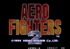
Aero Fighters 2 / Sonic Wings 2 que B lance la bomba. C y D no se usan.
Botones A · Disparar B · Lanzar una bomba (hay pocas) Empezar Meter una moneda + Salir del juego
Ver ficha y guía → ✅ Bien ⚠️ Problema ⏭️ Luego
3 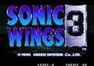
Aero Fighters 3 que B lance la bomba. C y D no se usan.
Botones A · Disparar B · Lanzar una bomba Empezar Meter una moneda + Salir del juego
Ver ficha y guía → ✅ Bien ⚠️ Problema ⏭️ Luego
4 Aggressors of Dark Kombat que C salte (aquí no se salta con el joystick: arriba y abajo mueven hacia el fondo y hacia delante). D no se usa.
Botones A · Dar un puñetazo B · Dar una patada C · Saltar Empezar Meter una moneda + Salir del juego
Ver ficha y guía → ✅ Bien ⚠️ Problema ⏭️ Luego
5 Alpha Mission II - Last Guardian al empezar se elige el modo A o B; en el A, B ataca con la armadura, y en el B, lanza misiles. Comprobar que C abre el menú de armaduras.
Botones A · Disparar el láser y los misiles · ponerse una armadura B · Atacar con la armadura (en el modo B: misiles) C · Abrir el menú de armaduras Empezar Meter una moneda + Salir del juego
Ver ficha y guía → ✅ Bien ⚠️ Problema ⏭️ Luego
que B cambie de arma y que, al mantener A, salga el disparo cargado. C y D no se usan.
Botones A · Disparar · mantener: disparo cargado (baja la potencia del arma) B · Cambiar de arma (cuatro tipos) Empezar Meter una moneda + Salir del juego
Ver ficha y guía → ✅ Bien ⚠️ Problema ⏭️ Luego
7 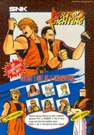
Art of Fighting que D provoque y que C, pegado al rival, lo lance.
Botones A · Dar un puñetazo (mantener: más fuerte) B · Dar una patada (mantener: más fuerte) C · Golpe fuerte · cerca del rival: agarrarlo y lanzarlo D · Provocar al rival (le quita espíritu) Empezar Meter una moneda + Salir del juego
Ver ficha y guía → ✅ Bien ⚠️ Problema ⏭️ Luego
8 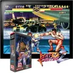
Art of Fighting 2 que C repita el último golpe con más fuerza y que D provoque.
Botones A · Dar un puñetazo B · Dar una patada C · Golpe fuerte (del último tipo pulsado, puñetazo o patada) · cerca del rival: agarrarlo y lanzarlo D · Provocar al rival (le quita espíritu) Empezar Meter una moneda + Salir del juego
Ver ficha y guía → ✅ Bien ⚠️ Problema ⏭️ Luego
9 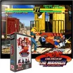
Art of Fighting 3 - The Path of the Warrior que C dé el golpe fuerte (y, pegado al rival y con dirección, lo lance) y que D provoque.
Botones A · Dar un puñetazo B · Dar una patada C · Golpe fuerte · cerca del rival + dirección: lanzarlo D · Provocar al rival Empezar Meter una moneda + Salir del juego
Ver ficha y guía → ✅ Bien ⚠️ Problema ⏭️ Luego
10 Bang Bang Busters que A infle a los enemigos y los lance, y que B salte. C y D no se usan.
Botones A · Disparar (infla a los enemigos) · con un enemigo inflado: lanzarlo (mantener para apuntar) B · Saltar · pulsar varias veces: flotar Empezar Meter una moneda + Salir del juego
Ver ficha y guía → ✅ Bien ⚠️ Problema ⏭️ Luego
qué hacen A y B (y si C o D sirven para algo). En Battle Flip Shot , la primera parte, A es el tiro especial y B + joystick, deslizarse.
Botones A · Golpear la pelota · tiro especial (⚠️ por confirmar) B · Deslizarse (⚠️ por confirmar) Empezar Meter una moneda + Salir del juego
Ver ficha y guía → ✅ Bien ⚠️ Problema ⏭️ Luego
12 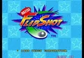
Battle Flip Shot que A haga el tiro especial y que B + joystick deslice al personaje. Hay una provocación: comprobar si es C o D.
Botones A · Tiro especial (Power Shot ) B · Con el joystick: deslizarse Empezar Meter una moneda + Salir del juego
Ver ficha y guía → ✅ Bien ⚠️ Problema ⏭️ Luego
13 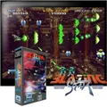
Blazing Star que, al mantener A y soltar, salga el disparo cargado, y que B lo disperse. C y D no se usan.
Botones A · Disparar · pulsar rápido: otro tipo de disparo · mantener: cargar B · Durante la carga: dispersar el disparo cargado en balas pequeñas Empezar Meter una moneda + Salir del juego
Ver ficha y guía → ✅ Bien ⚠️ Problema ⏭️ Luego
14 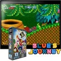
Blue's Journey que C encoja a Blue (sirve para entrar en zonas ocultas). D no se usa.
Botones A · Atacar (aturde a los enemigos; luego se pueden coger y lanzar) B · Saltar C · Encogerse o volver al tamaño normal Empezar Meter una moneda + Salir del juego
Ver ficha y guía → ✅ Bien ⚠️ Problema ⏭️ Luego
que los cuatro botones sean puñetazo y patada, flojos y fuertes (⚠️ las guías no lo dicen claro).
Botones A · Dar un puñetazo flojo B · Dar una patada floja C · Dar un puñetazo fuerte D · Dar una patada fuerte Empezar Meter una moneda + Salir del juego
Ver ficha y guía → ✅ Bien ⚠️ Problema ⏭️ Luego
16 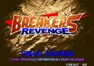
Breakers Revenge que los cuatro botones sean puñetazo y patada, flojos y fuertes (⚠️ las guías no lo dicen claro).
Botones A · Dar un puñetazo flojo B · Dar una patada floja C · Dar un puñetazo fuerte D · Dar una patada fuerte Empezar Meter una moneda + Salir del juego
Ver ficha y guía → ✅ Bien ⚠️ Problema ⏭️ Luego
17 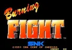
Burning Fight que B salte y que C dé la patada. D no se usa.
Botones A · Dar un puñetazo B · Saltar C · Dar una patada Empezar Meter una moneda + Salir del juego
Ver ficha y guía → ✅ Bien ⚠️ Problema ⏭️ Luego
18 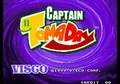
Captain Tomaday que A y B lancen cada puño y que, al mantener uno, el otro crezca hasta hacerse una pesa de 16 toneladas. C quizá cambia la formación.
Botones A · Lanzar el puño izquierdo (mantener: seguido) B · Lanzar el puño derecho (mantener: seguido) C · Cambiar la formación (⚠️ por confirmar) Empezar Meter una moneda + Salir del juego
Ver ficha y guía → ✅ Bien ⚠️ Problema ⏭️ Luego
19 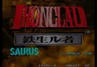
Choutetsu Brikin'ger - Iron Clad (prototype) qué hace cada botón: las guías consultadas no lo dicen.
Botones A · Disparar (⚠️ por confirmar) B · ⚠️ Por confirmar C · ⚠️ Por confirmar Empezar Meter una moneda + Salir del juego
Ver ficha y guía → ✅ Bien ⚠️ Problema ⏭️ Luego
qué botón gira la columna y si abajo la deja caer más rápido.
Botones A · Girar los colores de la columna (⚠️ por confirmar) Empezar Meter una moneda + Salir del juego
Ver ficha y guía → ✅ Bien ⚠️ Problema ⏭️ Luego
21 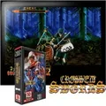
Crossed Swords que A ataque y B lance magia. El joystick mueve, cubre arriba o al medio y esquiva a los lados.
Botones A · Atacar con la espada B · Lanzar magia Empezar Meter una moneda + Salir del juego
Ver ficha y guía → ✅ Bien ⚠️ Problema ⏭️ Luego
22 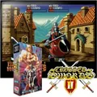
Crossed Swords 2 (bootleg of CD version) qué hace cada botón. Según Wikipedia, esta segunda parte añade un botón para saltar y esquivar.
Botones A · Atacar (⚠️ por confirmar) B · Lanzar magia (⚠️ por confirmar) C · Saltar o esquivar (⚠️ por confirmar) Empezar Meter una moneda + Salir del juego
Ver ficha y guía → ✅ Bien ⚠️ Problema ⏭️ Luego
23 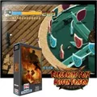
Crouching Pony Hidden Dragon qué hace cada botón. Es una demo casera de 2013; no hay guías.
Botones A · ⚠️ Por confirmar B · ⚠️ Por confirmar Empezar Meter una moneda + Salir del juego
Ver ficha y guía → ✅ Bien ⚠️ Problema ⏭️ Luego
que C cambie de arma. D no se usa.
Botones A · Disparar B · Saltar C · Cambiar de arma Empezar Meter una moneda + Salir del juego
Ver ficha y guía → ✅ Bien ⚠️ Problema ⏭️ Luego
No hay pruebas con este filtro.